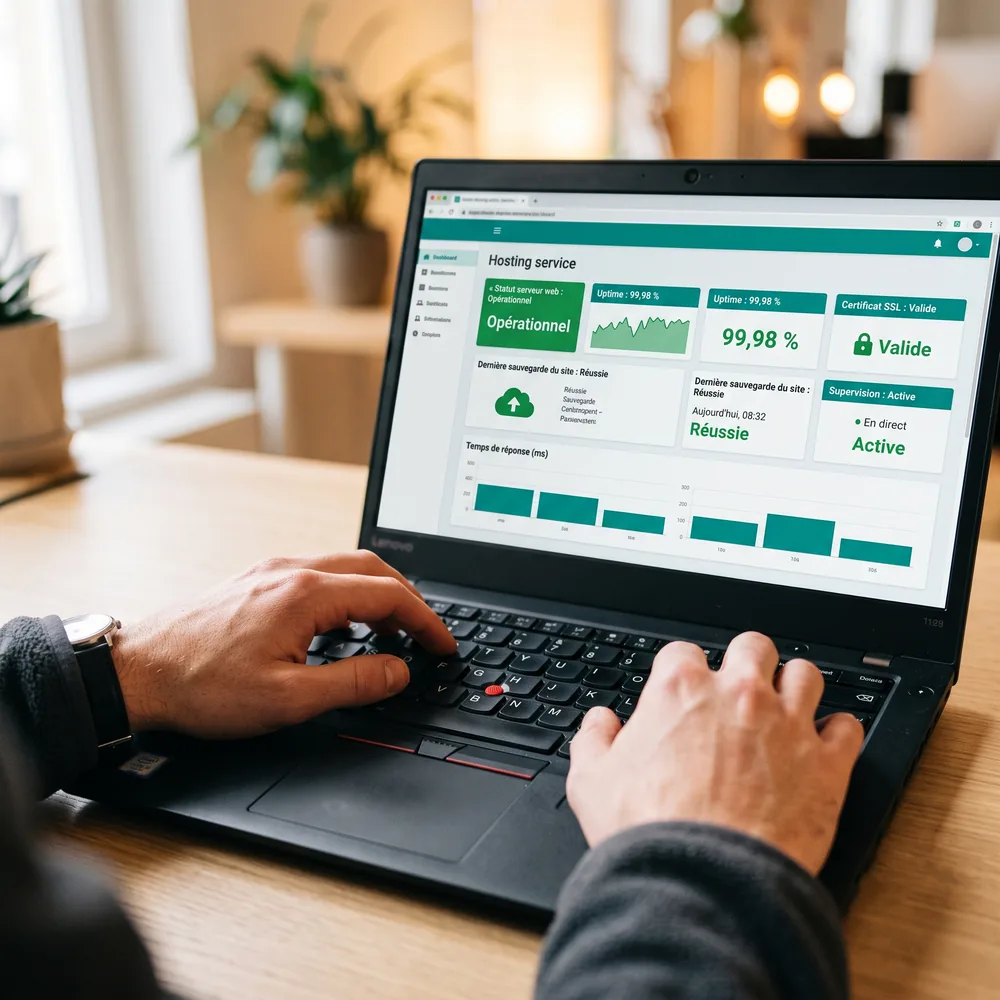

Référencement local et Google Ads,
pour que vos clients vous trouvent
Fiche Google optimisée, campagnes Ads pilotées, SEO local sur devis. On met en place tout ce qui vous rend visible sur Google, ces mêmes bases qui pèsent aujourd'hui dans les réponses des IA (ChatGPT, Perplexity), et on vous montre les résultats en toute transparence.

Reporting mensuel
ROI mesuré
Vos clients vous cherchent sur Google. Vous trouvent-ils ?
Quand un client cherche un commerce près de chez lui, il ouvre Google et contacte l'un des premiers résultats. Si vous n'y êtes pas, c'est un concurrent qui décroche à votre place.
Invisible sur Google
Votre site n'apparaît ni dans le Local Pack ni dans les résultats organiques. Vos clients potentiels ne savent même pas que vous existez.
Concurrents mieux référencés
Vos compétiteurs investissent dans leur visibilité en ligne et captent le trafic local que vous devriez recevoir.
Pas de stratégie locale
Sans plan SEO/SEA structuré, vous dépensez votre budget marketing sans savoir ce qui fonctionne et ce qui ne fonctionne pas.
On ne vous promet pas la première place : personne ne peut la garantir honnêtement. Ce qu'on maîtrise, on le met en place, et on vous le prouve chaque mois.
Tout pour gagner en visibilité locale
Un accompagnement complet, piloté par un interlocuteur unique basé en Saône-et-Loire : SEO local, Google Ads et fiche Google Business, sans jamais sous-traiter votre visibilité. Ces mêmes fondations (fiche complète, infos cohérentes, contenu structuré) alimentent aujourd'hui les réponses des moteurs IA comme ChatGPT ou Perplexity : on travaille ces signaux pour maximiser vos chances d'y être cité, sans garantir une citation que personne ne contrôle.
Audit SEO complet
Analyse technique de votre site, de vos mots-clés et de votre positionnement actuel. Identification des opportunités de croissance sur votre zone géographique.
Optimisation Google Business Profile
Optimisation complète de votre fiche : photos, catégories, horaires, publications régulières et gestion proactive des avis clients.
Campagnes Google Ads
Publicités ciblées géographiquement sur votre zone de chalandise. Budget maîtrisé, résultats immédiats en appels et visites.
Reporting mensuel
Rapport détaillé chaque mois : positions Google, nombre de clics, appels générés, demandes d'itinéraire et ROI de vos campagnes.
Ce qu'en disent nos clients
"Une agence de grande qualité qui nous a accompagnés sur plusieurs de nos sites internet. Nous avons particulièrement apprécié leur disponibilité, leurs conseils personnalisés et leur capacité à proposer des solutions efficaces et modernes."
Groupe QPS
Entreprise B2B
★★★★★ · Avis Google
"Cela fait 3 ans que Clément nous accompagne sur notre petite agence audiovisuelle et nous sommes ravis. Réactivité, pédagogie et professionnalisme sont au rendez-vous!"
Jonathan Kalifat
Agence audiovisuelle
★★★★★ · Avis Google
Aller plus loin
Complétez votre présence digitale
Le référencement est plus efficace avec un site rapide et un hébergement performant. Deux leviers qui se renforcent mutuellement.
Création de site internet
Un site rapide et optimisé SEO dès la conception. La base idéale pour amplifier votre référencement local dans les 71, 69, 01 et 42.

Hébergement web rapide
Serveurs en France, supervision continue, SSL gratuit. La vitesse de chargement est un facteur de classement Google direct.

Questions fréquentes
Combien de temps faut-il pour voir des résultats en SEO local ?
Quelle est la différence entre SEO et SEA ?
Faut-il un gros budget pour Google Ads ?
Combien coûte l'accompagnement référencement local ?
Est-ce que vous gérez aussi ma fiche Google ?
Le référencement local aide-t-il à apparaître dans ChatGPT ou Perplexity ?
Comment mesurez-vous les résultats ?
Puis-je arrêter à tout moment ?
Prêt à gagner en visibilité sur Google dans votre ville ?
Audit de votre référencement offert, sans engagement. Un interlocuteur unique basé en Saône-et-Loire vous rappelle sous 24h et vous propose un plan d'action clair pour les départements 71, 69, 01 et 42.